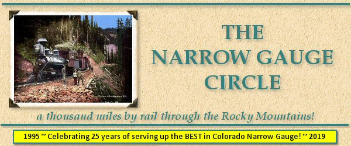
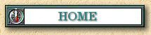

|
02/14/2015 New Photos of the Alpine Tunnel!
Lew Schneider was stationed at Ft Carson in 1958. Lew and a friend made two trips to the Alpine Tunnel area. Lew offered to share the photos taken on that trip with visitors to the Narrow Gauge Circle. Lew Schneider Collection |

|
The Narrow Gauge Circle is written, maintained,and hosted by: Mark L. Evans Send Comments to:Mark L. Evans All original materials, text, and digital images Copyright © 1995-2013 Mark L. Evans. All rights reserved. Imitation is said to be the "sincerest" form of flattery.....Please don't flatter us without permission. |